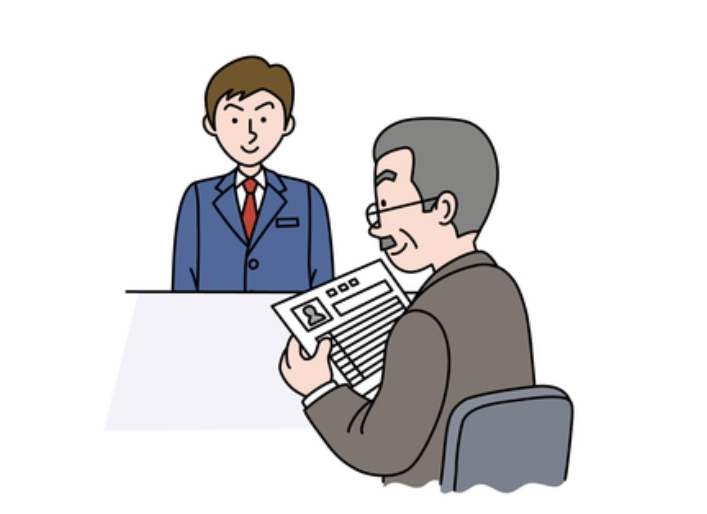
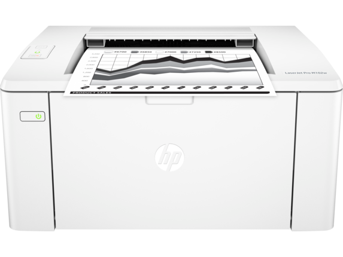

안녕하세요
우리기업 인사팀입니다.
혹시 이번 전형 과정 중
당사에서 의도치 않게
불편을 드린 것은
없었는지 여러모로
마음이 쓰입니다.
하루하루 애타는 마음으로
서류전형 발표를
기다리셨을거라 생각합니다.
인사담당자인 저도
취준생의 시절을 겪었고,
지원자 분들의 기다림과
간절함을 충분히 알고 있습니다.
그렇기에 한 분, 한 분의
입사지원서를 검토하면서
많은 고민을 거듭하고
이렇게 안타까운 마음으로
불합격 통보를 안내드립니다.
뛰어난 역량과 열정을 지닌
지원자 여러분 모두와
소중한 인연을 이어가고 싶었으나,
유감스럽게도 이번 전형에서는
한정된 채용 인원으로 인하여
인연이 되지 못한 점
양해해 주시기 바랍니다.
귀하를 포함한 지원자들의
자기소개서를 통해
보여지는 열정과 가능성,
그리고
우리기업에 입사하고자
하는 의지는
어느 하나 우열을
가릴 수 없을 만큼
우수한 것이었다고 생각됩니다.
본 결과는 귀하의 역량에 대한
단순한 점수 순이 아니라
당사의 인재상, 핵심역량과
채용 직무에 따른
종합적 판단의 결과입니다.
비록 이번 전형에서는
함께하지 못하지만,
더 좋은 기회에서
여러분의 꿈을
마음껏 펼치실 것이라고
확신하며
한 명의 인생 선배로서
여러분의 아름다운 도전을
응원하겠습니다.
그리고 귀하께서 보여주신
그
열정에 보답할 수 있도록
세계기업으로 힘차게
도약하는
우리기업이 되겠습니다.
귀하의 앞날에
행복이 가득하시길 기원하며,
앞으로도 우리기업에
많은 관심 부탁드립니다.
감사합니다.
안녕하세요
저희기업 채용담당자입니다.
2018년 저희기업
신입사원 공채에
지원해주셔서 감사합니다.
안타깝겓 이번 공채에서는
귀하를 모실 수 없게 되었습니다.
저
또한 취업준비생 시절,
수 차례 고배를 마셨었습니다.
당시 탈락문구의 붉은 색깔만으로도
당락을 맞출 수 있었던 정도라,
이렇게 긴 글은
제대로
읽어보지도 않았었기에,
지금 이 글을 쓰려니
참으로 조심스러워집니다.
그 어떤 말로도
위로가 되지 않음을
알기 때문입니다.
감히 말씀 드리자면,
귀하의 역량이 부족하다는 것은
결코 아니니,
오늘의 서류발표로 너무 상심히시지
않으셨으면 합니다.
보내주신 이야기 하나 하나는
정말 멋진 것들이었습니다.
많은 분들을 직접 뵙고
얘기 나누고 싶었지만,
그 중에서도 소수를 선발할 수 밖에
없었다는 점 이해를 바랍니다.
핵심역량을 제대로
이해하였는지가
우선 순위였습니다.
그리고 아무리 사소하더라도
핵심역량에 해당하는
적합한 사례를
찾아내서 진실하게 적어주신
분들을 선정했습니다.
또한
그 경험을 단순 나열하는데
그치지 않고,
그 경험에서 배운 것들을
자신의 생각으로
명확하게 정리해주셨던 분께
면접 기회가 돌아갔습니다.
한 분 한 분께
피드백 드리지 못하는 점
양해해주시기 바랍니다.
아울러
제출해주신 개인정보는
하반기 채용이 끝나는대로
폐기할 것을 약속드립니다.
추후 재지원에 대한
불이익은 없습니다.
더욱 성장한 모습으로 지원하시어,
이후 좋은 인연으로
다시금 만나 뵐 수 있기를
진심으로 바랍니다.
저희 저희기업도 빠르게 성장하여,
다음 기회에는 더욱 많은 분들을
모실 수 있었으면 좋겠습니다.
저희기업에 많은 관심
가져주셔서 감사드리며,
앞으로 귀하의 앞날에
행복이 가득하시길
기원합니다.
감사합니다.